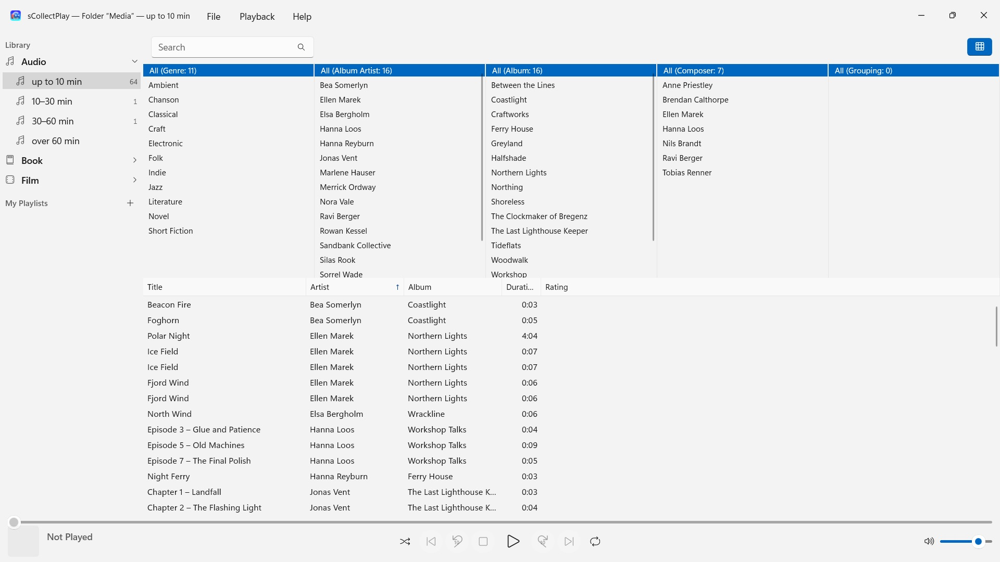
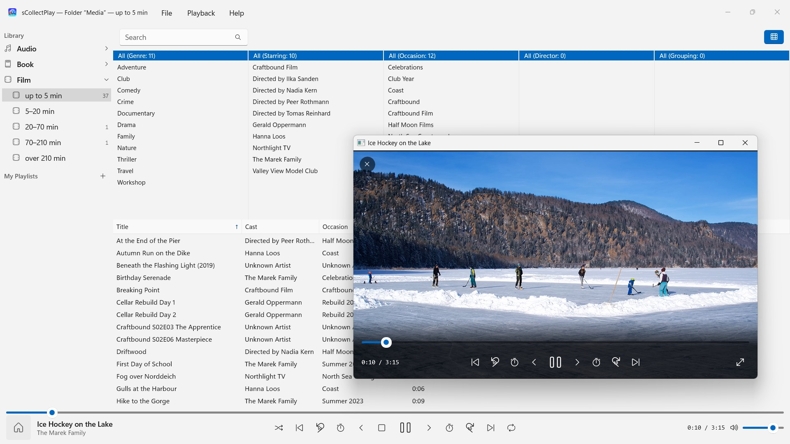

sCollectPlay
Choose a folder and play – no import, no copying
In the Microsoft Store from November 2026Choose a folder and play: music, audiobooks, podcasts, films and e-books fall into order by themselves – no import, no account, no cloud. iTunes libraries (XML) with their playlists, too.


sCollectPlay plays your collection where it lives: in any folder, on external drives or on a network drive. Choose a folder, and music, audiobooks, podcasts, films and e-books appear sorted in one list – no import, no copying, and nothing about your files changes.
24 languages: English, German, Czech, Croatian, Dutch, Finnish, French, Hungarian, Italian, Japanese, Korean, Norwegian Bokmål, Persian, Polish, Portuguese, Romanian, Russian, Spanish, Swedish, Thai, Turkish, Ukrainian, Chinese (Simplified and Traditional). The app follows the Windows display language.
TWO SOURCES
- Folders: sCollectPlay searches a folder and its subfolders and reads title, artist, album, genre and duration from the files themselves. Several folders can be combined into one list. At the next launch the last scanned state is there right away, and “Refresh Scanned Folders” (Ctrl+R) reads only what is new, changed or removed.
- iTunes XML: the library of iTunes for Windows with playlists, ratings and play counts. Whether a track is music, an audiobook, a podcast, a feature film, a series or a music video, the app takes from the XML.
ORDER WITHOUT EFFORT
A folder doesn’t say whether a file is a song or an audiobook. That is why sCollectPlay sorts by length when scanning: audio up to 10, 10–30, 30–60 and over 60 minutes, video from short clips to films over three and a half hours. Songs, radio-play episodes and audiobooks end up apart without you having to set anything. E-books and PDFs the app recognizes by their extension.
The window’s title bar always names what is loaded: which folder, which XML.
FINDING
- Search across title, artist, album, genre and more – inside playlists, too
- A column browser by genre, artist, album, composer and grouping, with multiple selection per column. Thousands of artists without endless scrolling: grouped by initial letter
- Show and hide columns freely, including file name, bit rate, sample rate and size; drag to change width and order
- The most recently used folders and XML files are ready in the File menu, and at the next launch the last source is back
PLAYBACK
- Audio with queue, shuffle and repeat
- Videos in their own window, with slow motion, frame-by-frame stepping, audio track and subtitle selection and full screen
- Windows plays most formats itself – MP3, AAC, FLAC, OGG, Opus and WMA as well as MP4, MKV, AVI, WMV and MPG. What it doesn’t know, such as AIFF, DSD or FLV, the app hands to the program set in Windows for that file type – VLC, for example
- Your own and smart playlists
- Any playlist can be exported together with its files as a folder with an M3U8 list – to an SD card, a USB stick or a folder, for example for VLC on an Android device
YOUR FILES STAY AS THEY ARE
sCollectPlay writes no tags and changes no metadata. It deletes only on your explicit command: a media file from scanned folders or an iTunes XML then goes to the Recycle Bin (on drives without one, such as network drives, it is deleted permanently after confirmation). Files in a sCollect library are never deleted by the app.
ON YOUR PC, AND NOWHERE ELSE
No accounts, no cloud, no analytics, no advertising. The app accesses only the folders you give it. Every language with complete help.
sCollectPlay Lite · Free — The lean edition of sCollectPlay: simply open a folder, an iTunes XML file, or an sCollect library and play music, movies, audiobooks, and podcasts from it — with playlists, audio and subtitle tracks, slow motion, and frame-by-frame stepping. Only one source is open at a time. The column browser, custom playlists, and the list of recently used sources are available only in the full version.
- Requires Windows 11 or later
- 24 languages
- Support: SwiftAppsBavaria@gmx.net
- Privacy Policy for sCollectPlay and sCollectPlay Lite